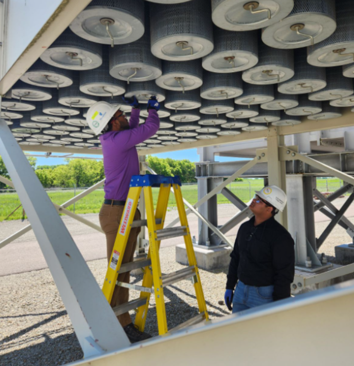
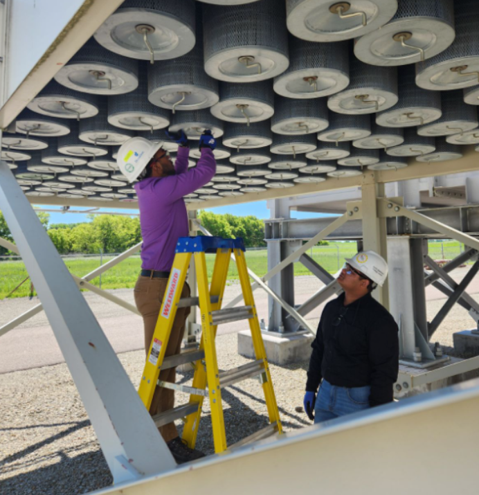

Carbon Fiber Layup
Accumulator Pressure Drop Test
Advanced lightweight design with improved structural integrity.
I am Hasan Al Zafir, currently a junior pursuing a Bachelor's degree in Mechanical Engineering at the University of Minnesota. My primary interests lie in robotics, automation, and the design and optimization of mechanical systems. I am passionate about leveraging advanced tools like CAD and simulation software to bring innovative ideas to life. I also enjoy exploring areas like control systems, dynamics, and manufacturing processes, constantly seeking opportunities to expand my technical expertise and problem-solving skills.
This website provides an overview of various work experiences, projects, and related activities that I have done since the start of my Bachelor's program.
Advanced lightweight design with improved structural integrity.
During my time at Donaldson, my role as a Product Engineer intern often extended beyond its primary scope, as I worked extensively on design, simulation, and testing projects. One of my key contributions was redesigning a TITAN 250 to optimize airflow across the evaporator. This project allowed me to refine my CAD design skills and learn advanced techniques in Computational Fluid Dynamics (CFD), enhancing both my technical expertise and problem-solving capabilities. Additionally, I gained valuable hands-on experience by conducting tests on A325 bolts using a hydraulic shaker to perform shock testing. These responsibilities not only strengthened my technical skills but also provided me with practical exposure to industry-level design and testing workflows, further developing my ability to tackle complex engineering challenges.
 

I enjoy capturing moments through photography during hikes and trips, and occasionally spend time editing photos to bring out their best features. Below are some of my favorite shots.
 >
>


Thanks for visiting my portfolio! If you have any questions, want to say hi, or just want to chat, feel free to send me a message. I'm always open to discussing new opportunities, ideas, or collaborations. You can reach me through the contact form, or find me on my social media links below. I look forward to hearing from you!